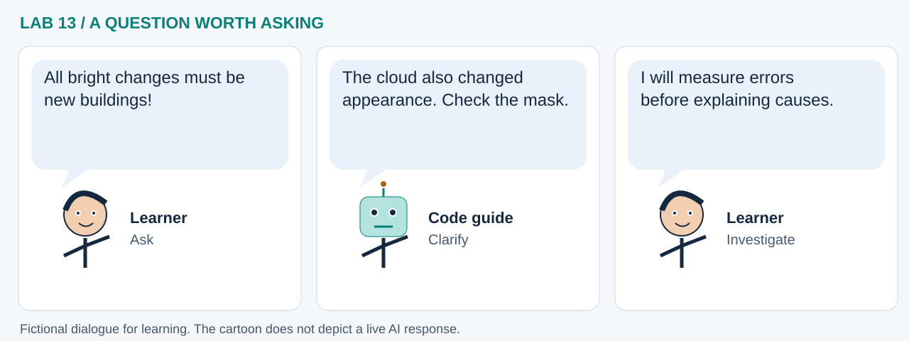

LAB 13 · 32-SECOND VISUAL WALKTHROUGH
Measure change before explaining it
How can an image explanation stay tied to reproducible evidence?
Silent, captioned storyboard. Use the player to pause, seek or change playback speed. On a small screen, use fullscreen or read the transcript below. The diagrams explain the method; they are not recordings of a live model run.
Download MP4 · Captions · Open infographic at full size

What runs here?
Synthetic images, masks, area and error counts run in Pyodide. A separate optional runner can send the exported image and metrics to a model.
Image-analysis foundation with optional vision-model interpretation; the default RGB threshold is a deterministic rule.
Transcript and code landmarks
- 00–08s · Compare
Calculate a per-pixel RGB difference between aligned invented scenes.
distance = norm(after-before) - 08–16s · Mask
Exclude the known synthetic cloud and apply an explicit threshold.
predicted = (distance > threshold) & valid - 16–24s · Evaluate
Compare prediction with known change using error counts and overlap.
iou = tp / (tp + fp + fn) - 24–32s · Explain
Use computed area and a labeled figure to support, then check, an explanation.
evidence['detected_area_m2']
The common misconception

Read the cartoon dialogue
- All bright changes must be new buildings!
- The cloud also changed appearance. Check the mask.
- I will measure errors before explaining causes.
Try explaining it
Why does excellent accuracy here not validate a real satellite model?
Check your reasoning
The scene and cloud truth are deliberately easy and known. Real imagery adds misalignment, seasonality, sensor and labeling uncertainty.
Original educational illustrations and captions authored for this repository. See the notebook for data and software citations.